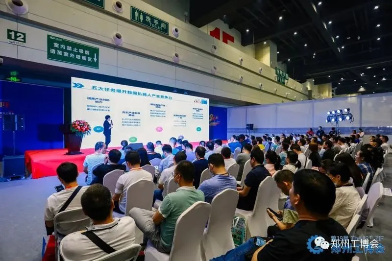
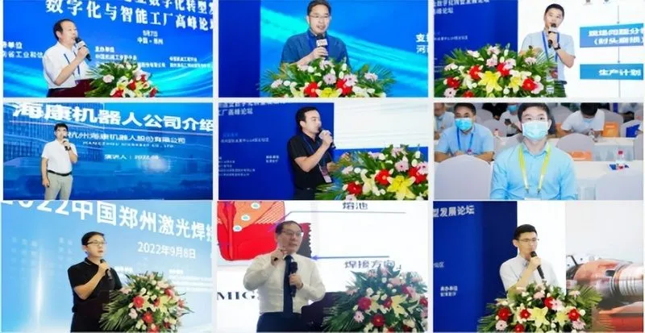
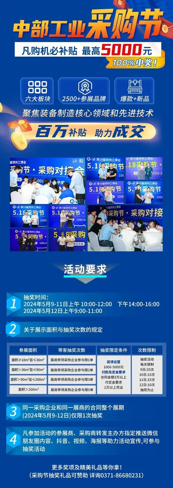

【2024郑州工博会】聚焦行业热点，助力产业升级，最新论坛会议重磅发布！
首页 / 【2024郑州工博会】聚焦行业热点，助力产业升级，最新论坛会议重磅发布！
2024郑州工博会
2024第20届郑州工业装备博览会（以下简称“郑州工博会”),将于2024年5月9-12日在郑州国际会展中心举办，展会设立机床展、激光钣金展、工业自动化展、机器人展、工业互联网展、五金机电展等主题展，展会规模近70000平方米，2500家业内知名企业参展，集中展示先进制造装备、整体解决方案、柔性制造单元、智能制造系统、数字化工厂等产业链创新技术，预计将吸引70000专业买家参观。

2024郑州工博会将进一步加大力度，聚焦下游应用的热点话题与需求变化，立足行业破局、技术创新、产业驱动、行业引领、供需对接等方面着手，打造具有郑州工博会特色的高品质持续性的论坛及会议。展会同期将举办高峰论坛+专项会议+新产品新技术交流会+中部工业采购节等20场会议活动，邀请院士专家、企业领袖、行业精英共同参与，深入畅谈应用行业的发展趋势与技术前瞻，为业内人士拓宽视野，提升展会体验，引领产业发展。


数字化与智能工厂技术应用论坛
背景
以“数字化+智能化”为核心的数智化转型，已成为促进产业链供应链高效协同和资源优化配置的有效手段，是赋能制造业绿色低碳高质量发展的重要引擎，也是推动我国经济社会高质量发展的重要方向。近年来，河南以新能源汽车、电子信息、先进装备等优势产业数智化转型升级，已成为制造企业发力的方向，通过创新与合作，推动着工业的不断升级。由振威会展集团、智博数字拟于2024郑州工业装备博览会期间举办“数字化与智能工厂技术应用论坛”，将共同探讨制造业数字化转型的策略、智能工厂的成功案例，就前沿趋势、典型案例、应用热点和实施策略等方面，助力企业实现数字化转型。
会议时间：2024年5月10日
会议地点：2024郑州工博会现场-论坛区
主办单位：振威会展集团 郑州振威名海会展有限公司 智博数字
会议议程（拟）
工业机器人与数字化工厂应用论坛 (上午）
9:30-10:00 签到/主持人开场
10:00-10:30
新松机器人一致力于为行业提供易用、好用的机器人
新松机器人
10:30-11:00
协作机器助力产线实现实现自动化、柔性化
遨博（北京) 智能科技有限公司
11:00-11:30
人工智能时代，机器人技术推动智慧物流建设
埃斯顿
11:30-12:00
三一智能锂电叉车，助力数字化工厂降本增效
三一机器人科技有限公司
12:00-12:30 待定
工业数字化与信息化技术及应用大会 (下午）
13:00-13:30签到/主持人开场
13:00-14:00
西门子数字化工厂整体解决方案
西门子
14:00-14:30
数字化系统产品及绿色智能制造 解决方案
施耐德电气（中国）有限公司
14:30-15:00待定
15:00-15:30
汇川控制技术助力批次、离散制造业智能化升级
深圳市汇川技术股份有限公司
15:30-16:00
ITOT融合 赋能边缘控制智能化
北京东土科技股份有限公司
拟邀请行业观众
自动化设备、3C电子、食品、新能源、医疗、物流自动化等行业
2024钢结构产业数智化技术高峰论坛
背景
十四五”期间，国家加快推进新型建筑工业化，大力发展装配式建筑，推广钢结构住宅建筑，推动城乡建设绿色发展和高质量发展，进一步发挥钢结构建筑绿色低碳特性，促进国家“碳达峰、碳中和”创造了条件。2022年5月，发改委和能源局联合发布《关于促进新时代新能源高质量发展的实施方案》，到2025年，公共机构新建建筑屋顶光伏覆盖率力争达到50%。钢结构作为主要的建筑结构类型之一，市场空间持续增长。由振威会展集团拟于2024郑州工业装备博览会期间举办“2024钢结构产业数智化技术高峰论坛”旨在围绕当前钢结构产业数字化转型中的挑战与机遇、路径与方案，从宏观、政策、产业、趋势和数字化应用等多角度、全方位，探讨钢结构行业发展，全面推动绿色低碳环保建筑及建筑工业化产业快速健康可持续发展贡献力量，共享国家发展战略新机遇。
会议时间：2024年5月9日
会议地点：2024郑州工博会现场-论坛区
主办单位：中国机械工业联合会 中国机械工程学会 振威会展集团 郑州振威名海会展有限公司
会议议程（拟）
1.双碳目标下钢结构行业发展现状及展望
2.光伏行业未来发展展望--透过装备看发展
3.双碳战略与装配式智能建造新未来
4.国内钢结构行业企业发展展望及新型钢结构工艺技术
5.激光切割机助力钢结构企业高效生产
6.钢结构行业数字化转型解决方案
拟邀请行业观众
安钢集团、河南天丰集团、河南二建集团、河南正大建设集团、安阳市大正钢板仓、河南亚鹰钢结构、南阳汉冶特钢、河南凤宝特钢、河南济源钢铁、郑州昌煜实业、河南大建钢构、河南许继电气、汇源电气、强盛电力工程、天晟电气......
2024郑州汽车先进制造技术论坛
背景
为加强机床工具行业与汽车行业的深入有效交流，促进机床工具技术与汽车制造技术的协同发展，中国机械工程学会、振威国际会展集团股份有限公司拟于2024郑州工业装备博览会期间举办“2024郑州汽车先进制造技术论坛”。论坛将邀请国内外机床工具行业、行业专家介绍近年来研制的新产品、新技术，以及汽车制造企业专家介绍汽车制造的需求和发展，并进行相关学术探讨和技术交流。旨在促进未来汽车技术的突破和应用，为汽车行业的可持续发展贡献力量。
会议规模： 200人
会议时间： 2024年5月9日
会议地点：2024郑州工博会现场-论坛区
主办单位：中国机械工程学会（待定) 振威国际会展集团股份有限公司 郑州振威名海会展有限公司
论坛议题（拟）
1.汽车制造绿色智能加工关键技术与装备
2.智能制造背景下的汽车行业机遇与挑战
3.汽车零部件制造高性能加工技术与装备
4.汽车制造中的高质高效激光焊接、切割关键工艺及成套设备
5.基于机器人的汽车车身先进制造技术与解决方案
6.高效汽车刀具的选择与应用
7.3D 打印技术在汽车制造中的应用与发展
8.新能源汽车电池模组智能化柔性生产线技术
9.汽车制造先进检测技术的发展与应用
拟邀请汽车企业
北汽福田汽车集团制造部 李红强
东风汽车集团公司规划部 崔厚学
上汽大众汽车公司试制部 沈卫东
宇通客车股份公司工艺部 刘炳伟
上汽通用汽车公司生产部 许伟达
比亚迪汽车工业公司装备部 杜效荣......
2024新能源汽车产业智能制造先进技术论坛
背景
十四五”时期是碳达峰的关键期、窗口期，是构建现代能源体系的重要阶段，随着新能源汽车的普及以智能制造系统的升级，为新能源汽车行业带来了巨大的市场需求新能源汽车产业链已被河南省列为重点培育的产业链之一现有规模以上汽车及零部件企业600余家，产业整体规模2600亿左右，形成了从核心零部件到整车、配套设备的新能源汽车产业链，未来河南省将打造万亿级新能源汽车产业集群。振威会展集团拟于2024郑州工业装备博览会期间举办“2024新能源汽车智能制造先进技术论坛”，此次论坛将深入探讨并关注行业重点、难点以及热点议题，邀请新能源行业的专家及制造企业来共同讨论与解决难题，推动新能源汽车产业实现更加可持续化、智能化的发展。
会议规模: 300人
会议时间： 2024年5月11日
会议地点：郑州国际会展中心
主办单位：中国机械工业联合会 中国机械工程学会 振威会展集团 郑州振威名海会展有限公司
会议议题（拟）
1.“双碳”目标下的新能源汽车与能源协同创新与实践
2.动力电池及储能电池壳体智能制造工厂整体解决方案
3.新能源汽车零部件智能制造技术的创新发展
4.新能源汽车底盘系统智能制造及未来发展路线
5.新能源汽车智造工厂的数字化转型升级方案
6.激光技术助力新能源电池智造升级
7.工业机器人在新能源汽车领域的柔性化和智能化生产
拟邀请行业观众
宇通客车、比亚迪、上汽通用、郑州日产、奇瑞汽车、创维、河南少林客车、河南东海电气、宁德时代、郑州众智科技、郑州深澜动力、海马新能源、洛阳LYC汽车轴承科技、郑州精益达、豫新汽车热管理、河南海威、河南恒发科技、洛阳开远智能、郑州振华君润、天鹤汽车模具、郑州东昇、中集华骏、鼎捷、飞龙汽车部件、郑州沃森汽车、许昌远东动轴、银隆新能源、南阳淅减、新乡北方、郑州豪精、河南嘉晨智能控制、南阳金博.....
中部工业采购节
为助力制造业转型升级/提高上下游对接效率，降低企业采购成本，推动制造业高质量发展，实现新发展格局。2024第20届郑州工博会将继续举办中部工业采购节以及采购对接会，搭建“一对多，多对一”的高效供需匹配平台，同时继续设立购机补贴，将金额设置为最高5000元，切实为展商和采购商谋福利，助力成交。众多品牌展商也将携多款爆款机型、最新产品，各种打折、满减、返利等多重钜惠活动！年中购机大促，不容错过！100%中奖！
